d <- read.csv('http://sldr.netlify.com/data/zshal.csv')
d$SonarA <- factor(d$SonarA)
d$SonarB <- factor(d$SonarB)13 Random Effects
We have seen a number of cases where model residuals were not independent, violation regression model conditions. What kind of model can address this kind of dependent data? Hierarchical models - here, models including random effects - are one way to approach this problem. These kinds of models go by many names, including hierarchical models, multi-level models, random effects models,or mixed effects models.
13.1 Dataset
From: Falcone et al. 2017, http://rsos.royalsocietypublishing.org/content/royopensci/4/8/170629.full.pdf
Satellite tags were used to record dive data and movements of 16 Cuvier’s beaked whales for up to 88 days each. The whales were incidentally exposed to different types of naval sonar exercises during the study period. How did characteristics of their dives change during sonar exposure? We will look specifically at shallow dive duration as a response variable.
13.2 Data Exploration
For these data, we are especially interested in how dive duration depends on sonar exposure. We also need to control for effects of other variables like depth and time of day.
gf_boxplot(DurAvg ~ factor(SonarA), data=d) |>
gf_labs(x='Sonar A Presence', y='Dive Duration (min.)')
gf_boxplot(DurAvg ~ factor(SonarB), data=d) |>
gf_labs(x='Sonar B Presence', y='Dive Duration (min.)')
gf_boxplot(DurAvg ~ TransClass, data=d) |>
gf_labs(x='Time of Day', y='Dive Duration (min.)')
gf_point(DurAvg ~ DepthAvg, data=d, alpha=0.5) |>
gf_labs(x='Max. Depth (m)', y='Dive Duration (min.)')
gf_point(DurAvg ~ SonarAPercOL.fill, data=d, alpha=0.5) |>
gf_labs(x='Percent Sonar A Overlap', y='Dive Duration (min.)')
gf_point(DurAvg ~ SonarBPercOL.fill, data=d, alpha=0.5) |>
gf_labs(x='Percent Sonar B Overlap', y='Dive Duration (min.)')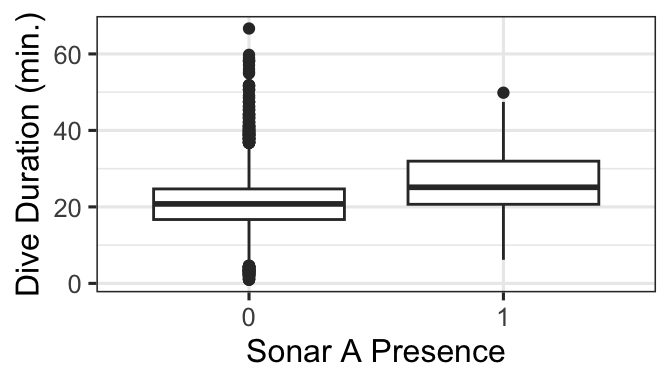
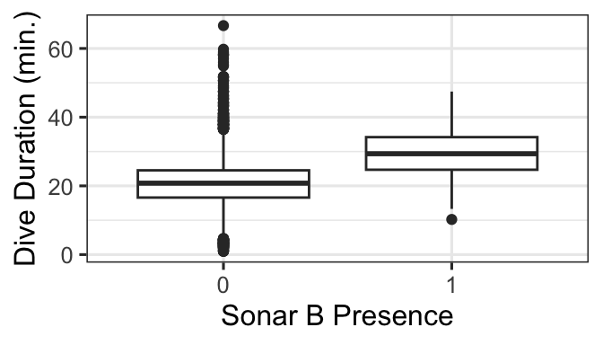
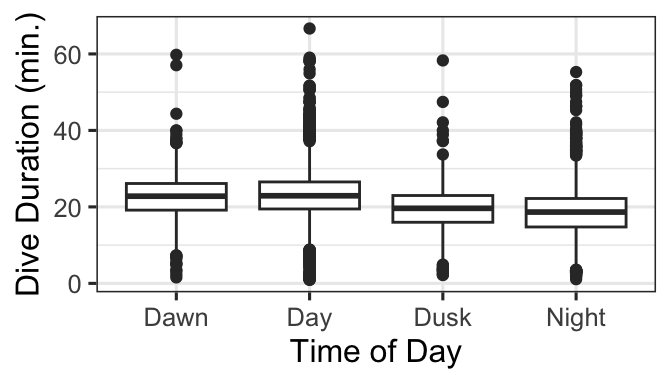
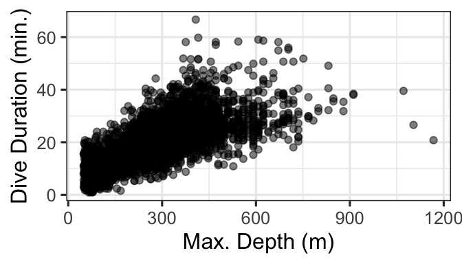
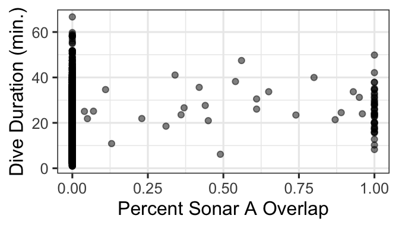
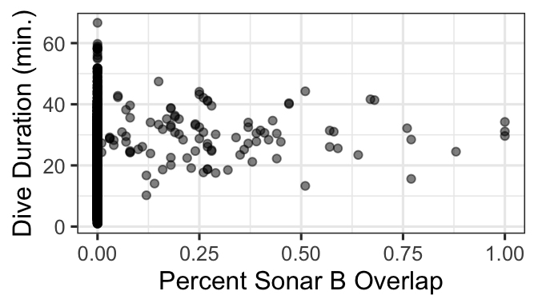
13.3 A Base Linear Model
A starting point for these data would be a basic linear regression, because the response variable is continuous, and we don’t have strong indication of nonlinear predictor-response relationships.
base.model <- lm(DurAvg ~ DepthAvg + TransClass + SonarA +
SonarB +SonarAPercOL.fill +
SonarBPercOL.fill, data=d)
summary(base.model)
Call:
lm(formula = DurAvg ~ DepthAvg + TransClass + SonarA + SonarB +
SonarAPercOL.fill + SonarBPercOL.fill, data = d)
Residuals:
Min 1Q Median 3Q Max
-34.344 -3.174 -0.148 2.891 40.732
Coefficients:
Estimate Std. Error t value Pr(>|t|)
(Intercept) 11.0774181 0.3056179 36.246 < 2e-16 ***
DepthAvg 0.0384292 0.0005743 66.920 < 2e-16 ***
TransClassDay -0.8195877 0.2718055 -3.015 0.00258 **
TransClassDusk -2.1080411 0.3536873 -5.960 2.66e-09 ***
TransClassNight -2.4488002 0.2708857 -9.040 < 2e-16 ***
SonarA1 2.6646627 1.8160219 1.467 0.14234
SonarB1 5.1562595 0.8556973 6.026 1.78e-09 ***
SonarAPercOL.fill 0.7555749 2.1077356 0.358 0.72000
SonarBPercOL.fill 0.8554161 2.2865382 0.374 0.70834
---
Signif. codes: 0 '***' 0.001 '**' 0.01 '*' 0.05 '.' 0.1 ' ' 1
Residual standard error: 5.242 on 6174 degrees of freedom
Multiple R-squared: 0.4844, Adjusted R-squared: 0.4837
F-statistic: 725.1 on 8 and 6174 DF, p-value: < 2.2e-1613.3.1 Model assessment
Let’s take a look right away at the model assessment plot that we suspect will be problematic for time-series data like ours. As we fear…
acf(resid(base.model), main='Residual ACF for base lm')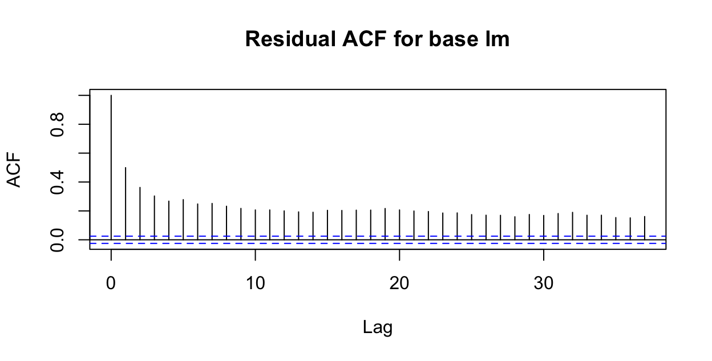
13.4 A Random Effects model
This time we will try to account for the correlation over time within individuals using something called a random effect model (also known as a mixed effects model, multilevel level, among others). How does this model change our regression equation?
Recall that the form of a base linear model (with just 2 predictors) would be:
\[ y = \beta_0 + \beta_1x_1 + \beta_2x_2 + \epsilon\]
Where \(\epsilon \sim N(0,\sigma)\) are the normally distributed residuals with mean 0.
Now…
13.4.1 The Formula
The function to fit a linear random effect model is lmer(). For a Poisson or Logistic regression with random effects, it’s glmer(). Both are from the package lme4. We add random effects to the model formula with:
\[ + (1|variable)\]
or nested:
\[ + (1|variable1/variable2)\]
Let’s try a random effect of individual whale first. We have:
rem1 <- lmer(DurAvg ~ DepthAvg + TransClass +
SonarA + SonarB +SonarAPercOL.fill+
SonarBPercOL.fill + (1|TagID),
data=d)Warning: Some predictor variables are on very different scales: consider
rescalingWhy yes - we should consider rescaling…what/why/how?
d$SonarAPercScale <- scale(d$SonarAPercOL.fill)
d$SonarBPercScale <- scale(d$SonarBPercOL.fill)
rem2 <- lmer(DurAvg ~ DepthAvg + TransClass +
SonarA + SonarB + SonarAPercScale +
SonarBPercScale + (1|TagID),
data=d)13.4.2 The Results
summary(rem2)Linear mixed model fit by REML ['lmerMod']
Formula: DurAvg ~ DepthAvg + TransClass + SonarA + SonarB + SonarAPercScale +
SonarBPercScale + (1 | TagID)
Data: d
REML criterion at convergence: 36982.5
Scaled residuals:
Min 1Q Median 3Q Max
-7.1028 -0.5632 -0.0081 0.5297 7.8183
Random effects:
Groups Name Variance Std.Dev.
TagID (Intercept) 3.401 1.844
Residual 22.928 4.788
Number of obs: 6183, groups: TagID, 15
Fixed effects:
Estimate Std. Error t value
(Intercept) 11.0158506 0.5547014 19.859
DepthAvg 0.0391448 0.0005327 73.490
TransClassDay -0.6416909 0.2490852 -2.576
TransClassDusk -1.9171752 0.3235698 -5.925
TransClassNight -2.3456311 0.2479312 -9.461
SonarA1 3.4520183 1.6608961 2.078
SonarB1 4.5271312 0.7842742 5.772
SonarAPercScale 0.0362979 0.1716890 0.211
SonarBPercScale 0.1119528 0.0991365 1.129
Correlation of Fixed Effects:
(Intr) DpthAv TrnsClssDy TrnsClssDs TrnsCN SonrA1 SonrB1 SnrAPS
DepthAvg -0.282
TransClssDy -0.365 -0.055
TrnsClssDsk -0.308 0.051 0.650
TrnsClssNgh -0.410 0.097 0.844 0.658
SonarA1 -0.029 -0.011 -0.011 0.004 -0.001
SonarB1 -0.006 -0.026 -0.037 -0.026 -0.006 -0.032
SonrAPrcScl 0.029 0.009 0.001 0.001 0.001 -0.933 -0.002
SonrBPrcScl 0.017 0.005 -0.005 0.011 0.003 0.020 -0.785 0.000How does this model compare to the original linear regression model? (Coefficient estimates? SEs? Additional stuff in the summary output?)
13.4.3 Model Assessment
How have the model assessment plots changed? Here we’ll focus mainly on the problem ACF.
gf_point(resid(rem2)~fitted(rem2), alpha=0.5)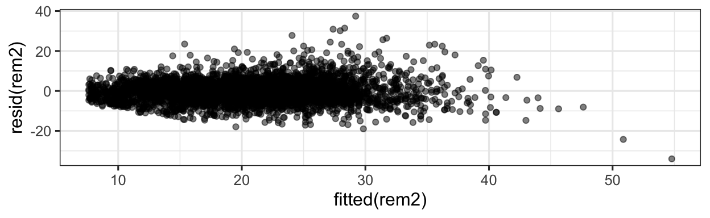
acf(resid(rem2))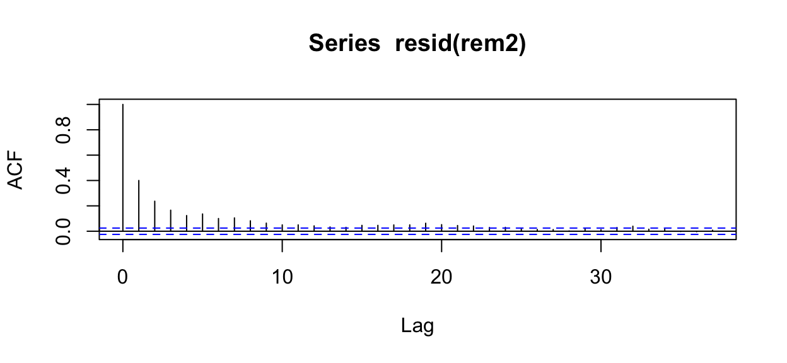
13.4.4 Refinement
What can we try next?
head(d, 3) TagID DurAvg StartTime DepthAvg TransClass SonarA SonarB
1 14 17.58 2011-01-06 20:45:30 335.5 Day 0 0
2 14 19.71 2011-01-06 22:13:23 351.5 Day 0 0
3 14 18.11 2011-01-06 22:34:48 287.5 Day 0 0
SonarAMinKm.fill SonarBMinKm.fill SonarAPercOL.fill SonarBPercOL.fill
1 500 500 0 0
2 500 500 0 0
3 500 500 0 0
TagDay Period TagDayPeriod SonarAPercScale SonarBPercScale
1 2011-01-06 (18,20] 2011-01-06.(18,20] -0.09784411 -0.1020368
2 2011-01-06 (20,22] 2011-01-06.(20,22] -0.09784411 -0.1020368
3 2011-01-06 (20,22] 2011-01-06.(20,22] -0.09784411 -0.1020368rem3 <- lmer(DurAvg ~ DepthAvg + TransClass + SonarA +
SonarB +SonarAPercScale + SonarBPercScale +
(1|TagID/TagDayPeriod), data=d)acf(resid(rem3))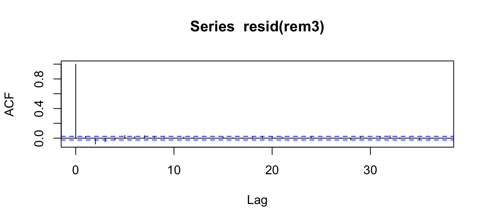
13.5 Model Selection for Mixed Models
Can we use our standard likelihood-based model selection criteria with random effects models?
Well…yes, and no.
13.5.1 REML or ML?
There are two different ways to fit these models to data:
- by maximizing the likelihood (ML, as we learned about earlier in the course). Unfortunately, it turns out that in this case, the ML estimates of the variance components (the random effects) is biased, toward underestimating variance, when sample size is small.
- by maximizing the restricted maximum likelihood (REML), which separates the likelhood into two parts (one with the fixed effects and one with the variance components). Maximizing parameters with respect to the second part only yields the REML estimators, which are unbiased and so preferred for smaller sample sizes. BUT there’s a catch…REML values can be used to compare models with different error and random effects structures, but not to determine which predictor variables should remain in a best model.
Here, we do have a large sample size, so if we ensure our model is fitted by ML we can try using AIC or BIC for model selection. The default of lmer() and glmer() is to use REML, so if we want ML we have to add the input REML=FALSE to our call.
rem4 <- lmer(DurAvg ~ DepthAvg + TransClass + SonarA + SonarB +
SonarAPercScale + SonarBPercScale +
(1|TagID/TagDayPeriod), data=d,
na.action='na.fail', REML=FALSE)Warning in checkConv(attr(opt, "derivs"), opt$par, ctrl = control$checkConv, :
Model failed to converge with max|grad| = 0.00309987 (tol = 0.002, component 1)In doing model selection for random effects models, dredge() knows to keep the random effects terms present in all models, so we don’t have to specify them as fixed terms.
library(MuMIn)
rem4_sel <- dredge(rem4, rank='BIC')Fixed term is "(Intercept)"Warning in checkConv(attr(opt, "derivs"), opt$par, ctrl = control$checkConv, :
Model failed to converge with max|grad| = 0.00309987 (tol = 0.002, component 1)head(rem4_sel)Global model call: lmer(formula = DurAvg ~ DepthAvg + TransClass + SonarA + SonarB +
SonarAPercScale + SonarBPercScale + (1 | TagID/TagDayPeriod),
data = d, REML = FALSE, na.action = "na.fail")
---
Model selection table
(Intrc) DpthA SonrA SnAPS SonrB SnBPS TrnsC df logLik BIC delta
44 10.66 0.03985 + + + 10 -18081.06 36249.4 0.00
46 10.69 0.03986 0.2679 + + 10 -18081.52 36250.3 0.92
42 10.68 0.03987 + + 9 -18088.50 36255.6 6.15
48 10.67 0.03985 + 0.1051 + + 11 -18080.83 36257.7 8.28
60 10.66 0.03985 + + 0.02154 + 11 -18081.03 36258.1 8.67
62 10.69 0.03986 0.2688 + 0.02007 + 11 -18081.50 36259.0 9.60
weight
44 0.583
46 0.368
42 0.027
48 0.009
60 0.008
62 0.005
Models ranked by BIC(x)
Random terms (all models):
1 | TagID/TagDayPeriod13.5.2 Best model so far:
rem5 <- lmer(DurAvg ~ DepthAvg + TransClass + SonarA + SonarB +
(1|TagID/TagDayPeriod), data=d,
na.action='na.fail', REML=FALSE)13.6 Random Slopes?
What we just practiced and called a “random effect” is sometimes also called a “random intercept” model because, although we allowed for an offset between the overall average predicted response value and that of an individual, we did not allow the slope of the relationship with any of the predictor variables to vary randomly with individual. It is possible to do this, although in my experience it often makes interpretation difficult.
Before you do it, think to yourself: do you really think that there is random variation in the relationship of the predictor with the response? One case where random slopes will work well is where there is a strong, clear overall effect and small variations in its magnitude between individuals. Another might be where the relationship with a certain predictor has very strong and very different slopes for different individuals, and you want to account for the added variability this adds to the model.
In the (g)lmer() formula, a model with a random slope and intercept in relation to a particular predictor is specified with the form:
\[ ... + (PredictorVariable | GroupingVariable)\] or equivalently \[ ... + (1 + PredictorVariable | GroupingVariable)\]
If you want to have a random slope for a certain predictor without the corresponding random intercept ( I can’t think of an example where this would be a good idea but you can do it), then use:
\[ ... + (0 + PredictorVariable | GroupingVariable)\]
13.7 Prediction Plots
There is a bit of added work involved in making prediction plots for some random effects models.
Unlike GEEs, which provide marginal predictions (predictions of the population average value for any combination of predictor variable values), random effects models provide predictions for an average individual. For a linear regression model (or any model with the identity link function, that is, no link function), the predicted values for the population average and average individual are the same. But with a link function in the mix, it’s different. Consider a (hypothetical) example of a logistic regression modelling probability of passing a test as a function of hours of instruction spent before the test.
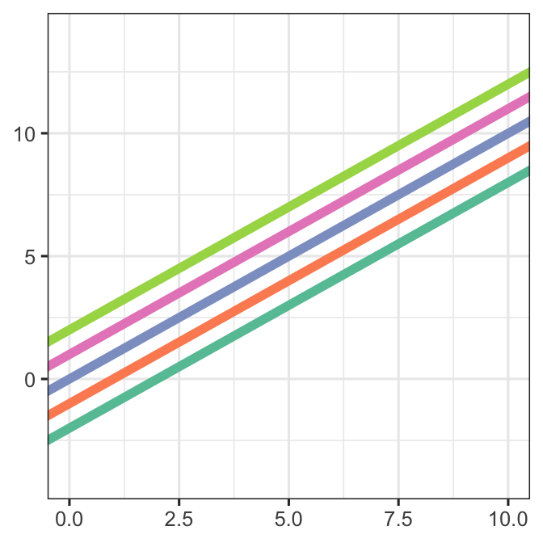
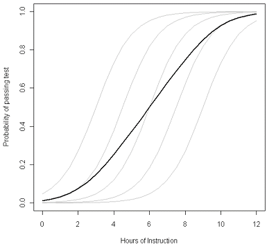
13.7.1 Parametric bootstrap to the rescue!
How can we get around this problem? We can make predictions from our model for many, many (simulated) individuals to get a ``population” of predictions. Then, we can take a point-wise average over all those individuals (and also use them to find a CI), to get population average predictions and confidence intervals.
We can do this with help from the function bootMer() from the lme4 package.
To make this work, we first need a function that makes predictions from our model.
# function to make predictions from a fitted model
library(s245)
# predict_rem4 <- function(model){
# orig_dat <- model@frame
# fixed_vals <- get_fixed(orig_dat[,c(2:ncol(orig_dat))])
# new_dat <- get_new_data(orig_dat, predictor='SonarA', fixed_vals)
# return(predict(model, newdata = new_dat,
# type = "response", allow.new.levels=TRUE))
# }bootMer() does parametric bootstrap simulations and each time, computes some function of the fitted model (here, predictions.) We can then examine the quantiles of these bootstrap predictions (the median or mean is our estimate or best-guess predicted value, and the 2.5 and 97.5 percentiles are the bounds of a 95 percent CI).
# boot_rem4 <- bootMer(rem4, FUN = predict_rem4, nsim = 1000,
# type = "parametric", use.u = FALSE)# glimpse(boot_rem4$t )# orig_dat <- rem4@frame
# fixed_vals <- get_fixed(orig_dat[,c(2:ncol(orig_dat))])
# new_dat <- get_new_data(orig_dat, predictor='SonarA',
# fixed_vals)
# new_dat <- new_dat |>
# mutate(pred = apply(boot_rem4$t, 2, mean),
# CIlow = apply(boot_rem4$t, 2, quantile, probs=0.025),
# CIhigh = apply(boot_rem4$t, 2, quantile, probs=0.975)
# )
#
# gf_point(pred ~ SonarA, data=new_dat) |>
# gf_labs(x='Sonar A Presence', y='Dive Duration (min.)') |>
# gf_errorbar(CIlow + CIhigh ~ SonarA, data=new_dat, width=0.3)(Because…)
# pred_plot(rem4, 'SonarA')